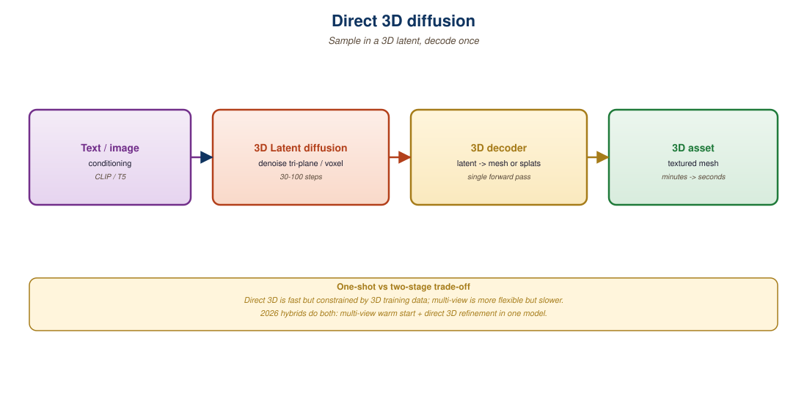

"Stop rendering 2D shadows of 3D things. Diffuse the 3D thing."
Trellis paper, paraphrasing the case for native 3D representations, late 2024
Section 23.3 covered the multi-view-then-lift pipelines. This section covers their replacement: native 3D latent diffusion. Instead of asking a 2D diffusion model to imagine novel views and then lifting those views into 3D, you train a diffusion model that operates directly in a 3D latent space. Microsoft Research's Trellis (Xiang et al., 2024) is the canonical example: it diffuses a sparse, structured 3D latent that can be decoded into a Gaussian splat, a radiance field, or a mesh. GaussianAnything, LN3Diff, and 3DTopia complete the family. The payoff is faster sampling (no per-view denoising), better multi-view consistency (consistency is built into the representation), and a unified output that downstream graphics tools can ingest.

36.4.1 The Case for Native 3D Latents
The deep reason direct 3D diffusion works is the same as the deep reason latent diffusion (Section 31.1) works for images: most of the bits in a raw 3D representation are redundant. A 3D Gaussian splat with one million Gaussians takes ~250 MB raw, but a learned encoder can compress most objects to a few tens of thousands of floats with no perceptual loss. Once you have such a 3D autoencoder, you can train a latent diffusion model that operates on the compressed representation. Inference is a single (latent) diffusion run plus a decoder pass, no multi-view rendering required.
The challenges are 3D-specific:
- Choice of representation: occupancy grid, triplane, sparse voxel, or point cloud. Each has different memory and inductive bias.
- Variable-shape inputs: meshes have different vertex counts, point clouds have different point counts. The latent has to be regular.
- Decoder versatility: production users want both Gaussian splats (for AR) and meshes (for downstream DCC tools like Blender or Unreal). The decoder must support both.
36.4.2 Trellis: Structured 3D Latents (Microsoft Research, 2024)
Trellis tackles all three challenges with a structured latent design. Each 3D object is encoded as a sparse voxel grid of feature vectors at multi-scale resolution. Empty voxels are dropped (sparsity); non-empty voxels carry a high-dimensional feature. A transformer-based decoder maps these features to whatever output representation you need.
The training stack has three components:
- 3D VAE: encodes an object as a sparse latent voxel grid (typically 643 sparse cells with ~1k non-empty cells per object). The encoder takes posed multi-view renders as input; the decoder produces either Gaussians, radiance fields, or signed distance fields for mesh extraction.
- Sparse 3D diffusion transformer (DiT-3D): a diffusion model with sparse 3D attention that operates on the structured voxel latents. Trained on the full Objaverse-XL + curated Bemis collection (~500k objects).
- Multi-decoder heads: independent decoders for Gaussian splat, radiance field, and SDF outputs. All share the same latent backbone.
# Trellis inference via the released pipeline (Microsoft/TRELLIS).
# A single image yields three different 3D representations.
from trellis.pipelines import TrellisImageTo3DPipeline
from PIL import Image
pipe = TrellisImageTo3DPipeline.from_pretrained(
"JeffreyXiang/TRELLIS-image-large"
)
pipe.cuda()
image = Image.open("sneaker.png").convert("RGBA")
outputs = pipe.run(
image,
seed=42,
formats=["gaussian", "radiance_field", "mesh"],
sparse_structure_sampler_params={
"steps": 12,
"cfg_strength": 7.5,
},
slat_sampler_params={
"steps": 12,
"cfg_strength": 3.0,
},
)
# Three representations from one inference run
outputs["gaussian"][0].save_ply("sneaker.ply")
outputs["mesh"][0].export("sneaker.glb")
# Radiance field can be rendered with the bundled viewerThe two-stage Trellis sampler (occupancy then features) is closely related to Section 31.1's discussion of cascaded diffusion. The first stage decides the coarse shape (where the object exists), the second fills in the details. This factorization gives Trellis its speed advantage: occupancy is a cheap binary problem at 323 resolution; features only need to be computed where occupancy is non-zero.
36.4.3 GaussianAnything: Latent Gaussian Diffusion (2024)
GaussianAnything (Lan et al., 2024) takes a different cut. Instead of voxel features, the latent is a fixed-size set of Gaussian primitives: 4096 Gaussians whose parameters are themselves diffused. The encoder takes multi-view renders and predicts a canonical 4096-Gaussian latent; the diffusion model learns the distribution over these latents.
The advantage is that the decoder is trivial (just unpack the Gaussians). The disadvantage is that 4096 Gaussians is too few for fine details; GaussianAnything ships an optional upsampling stage that produces ~50k Gaussians from the latent set.
36.4.4 Latent NeRF and the Triplane Line
The other major line is triplane-latent diffusion. EG3D (Chan et al., 2022) introduced the triplane representation: three orthogonal 2D feature planes (XY, XZ, YZ) whose values can be looked up at any 3D point via trilinear interpolation. Diffusing in triplane space gives you a 2D-friendly latent (three 256x256x32 grids) that decodes to a 3D NeRF.
- SSDNeRF (Chen et al., 2024) trains a single-stage encoder-decoder that diffuses triplanes.
- LN3Diff (Lan et al., 2024) adds a hierarchical structure to triplane diffusion, enabling text-to-3D and image-to-3D from the same backbone.
- 3DTopia (Hong et al., 2024) cascades a triplane diffusion stage with an SDS refinement stage, balancing speed and quality.
| Model | Latent Type | Outputs | Inference Time (A100) | Strengths |
|---|---|---|---|---|
| Trellis | Sparse structured voxel | Gaussian, RF, mesh | ~10 s | Output flexibility, high quality |
| GaussianAnything | 4096 canonical Gaussians | Gaussian splat | ~3 s | Fastest, native to 3DGS |
| LN3Diff | Hierarchical triplane | NeRF, mesh | ~6 s | Text-to-3D from same backbone |
| 3DTopia | Triplane + SDS refine | NeRF, mesh | ~60 s | Highest geometric fidelity |
| Direct3D (2024) | Latent volume | SDF, mesh | ~8 s | Clean mesh topology |
36.4.5 Text Conditioning and Style Control
Trellis and LN3Diff both support text conditioning through cross-attention to a frozen text encoder (T5-XXL in Trellis, CLIP in LN3Diff). The pattern is identical to text-to-image diffusion: text tokens become keys and values, the diffusion latent becomes queries. Text-to-3D quality has lagged image-to-3D throughout 2024 to 2025; the open problem is that 3D training corpora are perhaps 1000x smaller than text-image pairs and far less diverse, so the model has trouble with compositional prompts.
Style and material control remain underdeveloped. The current pattern is to generate geometry with Trellis or similar, then re-texture using a 2D diffusion model (e.g., Paint3D, TextureDreamer) that paints a UV-unwrapped mesh. Section 23.5 covers the related problem of scene relighting.
A 2025 indie studio used Trellis as the core of a procedural prop pipeline. Designers wrote text prompts ("rusted iron lantern with cracked glass") and Trellis produced a Gaussian splat + a textured glTF mesh in ~10 seconds. The glTF was imported into Unreal Engine 5 with auto-generated LODs; the Gaussian splat was used for marketing renders. Average artist time per asset dropped from 4 hours to 8 minutes, with the artist's role shifting to prompt engineering and quality review.
36.4.6 Where the Field Is Heading (2025 to 2026)
Three trends define the next 18 months:
- Scaling laws for 3D: early evidence (Trellis vs. its predecessors) suggests power-law improvements with both data and parameters, mirroring Chapter 7's text scaling laws. Expect 10B-parameter 3D diffusion models by 2026.
- Native rectified flow: like SD3 and Flux, the 3D diffusion world is moving from DDPM training to rectified flow / flow matching for sharper outputs at fewer sampling steps.
- Scene-scale generation: Trellis-style models are object-scale. Scene-scale equivalents (BlockFusion, SceneDreamer-2) are early but improving rapidly; expect a unified scene-and-object model within the year.
The single most important decision when choosing a 3D generative model is what your downstream consumer wants. A web AR app wants a Gaussian splat (GaussianAnything, Trellis-gaussian). A game engine wants a glTF mesh with UV unwrap and PBR materials (Trellis-mesh, SF3D, Direct3D). A research project wants a NeRF (LN3Diff, SSDNeRF). The same input image can produce all of these; pick the model whose decoder matches your output target.
Direct 3D diffusion replaces multi-view-then-lift with single-pass 3D latent sampling. Trellis defines the state of the art with structured sparse voxel latents and a multi-decoder head that yields Gaussians, radiance fields, or meshes from one model. GaussianAnything is the fastest native-Gaussian option; triplane-based variants (LN3Diff, 3DTopia) dominate the NeRF and mesh outputs. The field is following the same scaling and rectified-flow trends as 2D image generation, with object-scale models far ahead of scene-scale.
- Trellis splits inference into a sparse-structure stage and a structured-latent stage. Why is this faster than diffusing the full feature volume in one shot?
- GaussianAnything uses 4096 Gaussian primitives as its latent. Why does it then need an upsampling stage, and what does that imply about the limits of the latent diffusion approach?
- If you need a glTF mesh for a game engine pipeline, which of the models in Figure 36.4.2 fit, and how would you choose between them?
- What is the analog of latent-image diffusion's "image VAE" in the 3D world, and what makes the 3D version harder to train?
What Comes Next
Section 23.5: Scene Relighting and 3D Editing closes the chapter with the post-generation problem: once you have a 3D scene, how do you change its lighting, edit its geometry, or composite it into a new environment?